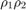

function [Rd,Td,Ru,Tu] = RT(i1,i2,a,b,rho,S2Velocity,uuC,uC2,uC)
% computation of reflection and transmission coefficients for % elastic propagation for a solid-solid boundary. % Wave incident from layer above (Muller table 1) and from below (table 2). % % i1 ... index of upper layer % i2 ... index of lower layer % a ... vertical p slowness (vector) % b ... vertical s slowness (vector) % rho ... density (vector) % S2Velocity ... shear velocity squared (complex) (vector) % uuC ... complex horizontal slowness squared (scalar) % uC2 ... 2 times uC (scalar) % uC ... complex horizontal slowness (scalar) % % Rd ... reflection matrix for downgoing (2x2 complex) % Td ... transmission matrix for downgoing (2x2 complex) % Ru ... reflection matrix for upgoing (2x2 complex) % Tu ... transmission matrix for upgoing (2x2 complex) % % NOTE: This SOFTWARE may be used by any individual or corporation for any purpose % with the exception of re-selling or re-distributing the SOFTWARE. % By using this software, you are agreeing to the terms detailed in this software's % Matlab source file. % BEGIN TERMS OF USE LICENSE % % This SOFTWARE is maintained by the CREWES Project at the Department % of Geology and Geophysics of the University of Calgary, Calgary, % Alberta, Canada. The copyright and ownership is jointly held by % its 'AUTHOR' (identified above) and the CREWES Project. The CREWES % project may be contacted via email at: crewesinfo@crewes.org % % The term 'SOFTWARE' refers to the Matlab source code, translations to % any other computer language, or object code % % Terms of use of this SOFTWARE % % 1) This SOFTWARE may be used by any individual or corporation for any purpose % with the exception of re-selling or re-distributing the SOFTWARE. % % 2) The AUTHOR and CREWES must be acknowledged in any resulting publications or % presentations % % 3) This SOFTWARE is provided "as is" with no warranty of any kind % either expressed or implied. CREWES makes no warranties or representation % as to its accuracy, completeness, or fitness for any purpose. CREWES % is under no obligation to provide support of any kind for this SOFTWARE. % % 4) CREWES periodically adds, changes, improves or updates this SOFTWARE without % notice. New versions will be made available at www.crewes.org . % % 5) Use this SOFTWARE at your own risk. % % END TERMS OF USE LICENSE % Muller (1985), Table 1 and 2. % some useful variables rho1rho2 = rho(i1) * rho(i2);
Not enough input arguments. Error in RT (line 60) rho1rho2 = rho(i1) * rho(i2);

c is twice the difference in rigidity
c = 2 * ( rho(i1) * S2Velocity(i1) - rho(i2) * S2Velocity(i2)); cuu = c * uuC; % auxiliary quantities (occur repeatedly) aux1 = cuu - (rho(i1) - rho(i2)); aux2 = cuu + rho(i2); %aux1aux2 = aux1 * aux2; aux3 = cuu - rho(i1); caux3 = c * aux3; caux2 = c * aux2; %vertical slowness related variables a1 = a(i1); b1 = b(i1); a2 = a(i2); b2 = b(i2); a1b1 = a1 * b1; a1b2 = a1 * b2; a2b1 = a2 * b1; a2b2 = a2 * b2; a1a2b1b2 = a1b1 * a2b2; % computing D factors from Table 1 and 2(Muller, 1985) % down-going propagasion auxm1 = a2b2 * aux3 * aux3; auxm2 = aux1 * aux1 * uuC; d1d = auxm1 + auxm2 + a2b1 * rho1rho2; % d^d_1 auxm1 = a1b1 * aux2 * aux2; auxm2 = a1a2b1b2 * c * cuu; d2d = auxm1 + auxm2 + a1b2 * rho1rho2; % d^d_2 % up-going propagation auxm1 = a1b1 * aux2 * aux2; auxm2 = aux1 * aux1 * uuC; d1u = a1b2 * rho1rho2 + auxm1 + auxm2;%d^u_1 auxm1 = a1a2b1b2 * c * cuu; auxm2 = a2b2 * aux3 * aux3; d2u = a2b1 * rho1rho2 + auxm1 + auxm2; %%%%%%%%%%%%%%%%%%%%%%%%%%%%%%%%%%%%%%%%%%%%%%%%%%%%%%%%%% %downgoing (incident, Y. Ma, Oct. 2004) waves (Muller(1985), Table 1) % computing some related variables dd = d1d + d2d; % (d^d_1 + d^d_2) % dpda = a1 * dd; % dpdb = b1 * dd; ddm = d2d - d1d; %aux4 = aux1 * aux3 + caux2 * a2b2 / dd; % Maybe a type-error in the orginal %codes (Y. Ma, Oct. 2004). Corrected as the followinf line: aux4 = (aux1 * aux2 + caux3 * a2b2) / dd; % see Muller (1985) Table 1, formula 2 & 6 rho1_2 = rho(i1) * 2 / dd; % computing the reflection coefficients Rd(1,1) = ddm / dd; % Rpp Rd(1,2) = (uC2 * b1) * aux4; % Rsp Rd(2,1) = - (uC2 * a1) * aux4; % Rps Rd(2,2) = (ddm - 2 * rho1rho2 * (a1b2 - a2b1)) / dd; % Rss % computing the transmision coefficients Td(1,1) = rho1_2 * a1 * (aux2 * b1 - aux3 * b2); % Tpp Td(1,2) = rho1_2 * b1 * uC *(aux1 + c * a1b2); % Tsp Td(2,1) = - rho1_2 * a1 * uC* (aux1 + c * a2b1); % Tps Td(2,2) = rho1_2 * b1 * (aux2 * a1 - aux3 * a2); % Tss %%%%%%%%%%%%%%%%%%%%%%%%%%%%%%%%%%%%%%%%%%%%%%%%%%%%%%%%%% %downgoing waves (Muller(1985), Table 2) %Upgoing incident (Y. Ma, Oct. 2004) % computing some related variables %disp('entering RT'); dd = d1u + d2u; % (d^d_1 + d^d_2) % dpda = a1 * dd; % dpdb = b1 * dd; ddm = d2u - d1u; %aux4 = aux1 * aux2 + caux3 * a1b1 / dd; % Maybe a type-error in the orginal %codes (Y. Ma, Oct. 2004). Corrected as the followinf line: aux4 = (aux1 * aux3 + caux2 * a1b1) / dd; rho2_2 = rho(i2) * 2 / dd; % computing the reflection coefficients Ru(1,1) = ddm / dd; % Rpp Ru(1,2) = - (uC2 * b2) * aux4; % Rsp Ru(2,1) = (uC2 * a2) * aux4; % Rps Ru(2,2) = (ddm - 2 * rho1rho2 * (a2b1 - a1b2)) / dd; % Rss % computing the transmision coefficients Tu(1,1) = rho2_2 * a2 * (aux2 * b1 - aux3 * b2); % Tpp Tu(1,2) = rho2_2 * b2 * uC * (aux1 + c * a2b1); % Tsp Tu(2,1) = - rho2_2 * a2 * uC * (aux1 + c * a1b2); % Tps Tu(2,2) = rho2_2 * b2 * (aux2 * a1 - aux3 * a2); % Tss